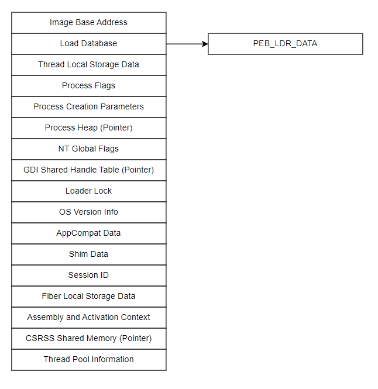
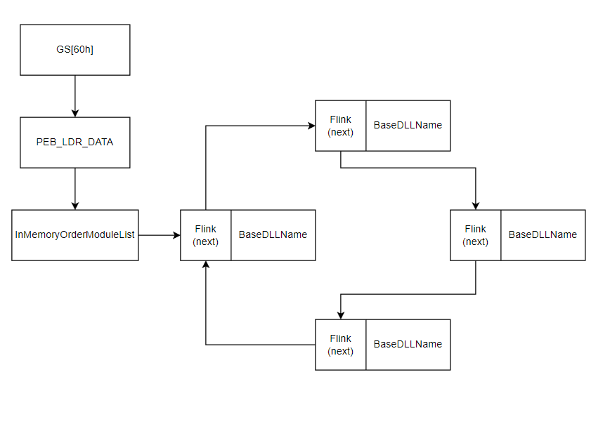
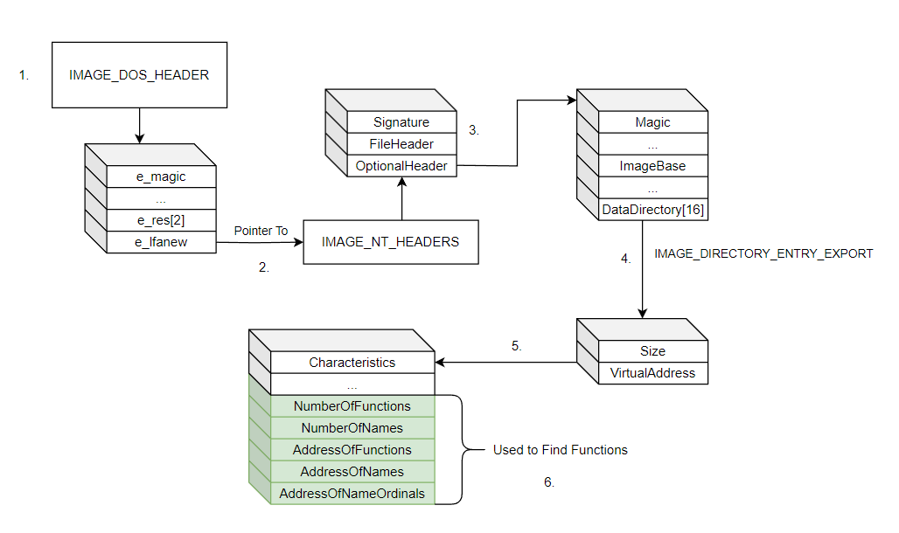
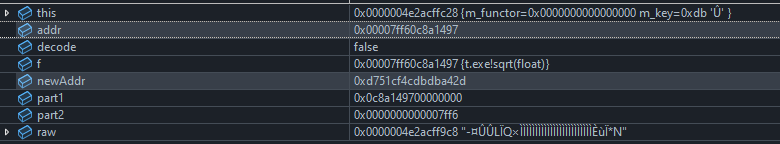

Table of Contents
- Using WINAPI’s LoadLibary and GetProcAddress
- Loading Libraries directly from the PEB
- Disguising access to the PEB using assembly
- Loading Functions from an executable’s Export Table
- Bonus: Function Address Obfuscation
Using WINAPI’s LoadLibrary and GetProcAddress
One of the very first things an analyst will likely do is get an overall picture of what a malware sample is doing. This will likely include listing all function imports and exports. You can hide what functions you import by not using them directly i.e. not allowing MSVC or whatever other compiler you are using to resolve function references for you. Windows provides a handful of functions for doing just this: LoadLibrary(Ex), GetProcAddress, GetModuleHandle, and so on. I will focus on the former two.
Some malware will use these two functions without any form of obfuscation. For example, Ursnif loads VirtualAlloc and CreateThread very blatantly:
// Note this is not a 1-1 copy of Ursnif
HMODULE hMod = LoadLibrary("KERNEL32.dll");
if(hMod == INVALID_HANDLE_VALUE)
... error handling ...
myVirtualAlloc = (MyVirtualAlloc_t*)GetProcAddress(hMod, "VirtualAlloc");
This is great and very easy to use, but it is also highly detectable. For starters, you now have references to the strings “KERNEL32.DLL” and “VirtualAlloc” in your executable. This could be easily encrypted, perhaps by using constant expressions. Secondly, some EDR solutions can hook onto or inject code into various DLLs to validate it’s parameters. Sophos Intercept X does this. You can read about bypassing that here. This means that, even if you do encrypt your function/library names, a well-built EDR could still detect that which you are loading. In some cases, this is irrelevant. In others, it is inevitable, especially if you are loading non-system-related libraries e.g. for COM. One way to bypass this could be to load system-related libraries directly from the Process Environment Block (PEB).
Loading Libraries Directly from the Process Environment Block
The PEB is a usermode data structure that is not really meant for us peon software devs to use. It contains some information about debugging and loaded modules, however, which are extremely useful. It is considered an “opaque” data structure as its public implementation is heavily obfuscated. Here is the “official” version listed in the wintrnl.h header provided by Microsoft:
typedef struct _PEB {
BYTE Reserved1[2];
BYTE BeingDebugged;
BYTE Reserved2[1];
PVOID Reserved3[2];
PPEB_LDR_DATA Ldr;
PRTL_USER_PROCESS_PARAMETERS ProcessParameters;
PVOID Reserved4[3];
PVOID AtlThunkSListPtr;
PVOID Reserved5;
ULONG Reserved6;
PVOID Reserved7;
ULONG Reserved8;
ULONG AtlThunkSListPtr32;
PVOID Reserved9[45];
BYTE Reserved10[96];
PPS_POST_PROCESS_INIT_ROUTINE PostProcessInitRoutine;
BYTE Reserved11[128];
PVOID Reserved12[1];
ULONG SessionId;
} PEB, *PPEB;
Everything marked as reserved is meant for internal use by the kernel. Here is a table containing the PEBs internal fields (Windows Internals, Part 1, 7e):

However, you can find an outdated but relevant header file from the Windows Server 2003 source code leak here.
The field we are most concerned with is Ldr. It contains a circularly linked list of LDR_DATA_TABLE_ENTRY which contains the name of a single module. Curiously, Linux has an almost identical linked list API here. Here is it’s definition:
typedef struct __LDR_DATA_TABLE_ENTRY
{
LIST_ENTRY InLoadOrderLinks;
LIST_ENTRY InMemoryOrderLinks;
LIST_ENTRY InInitializationOrderLinks;
PVOID DllBase;
PVOID EntryPoint;
ULONG SizeOfImage;
UNICODE_STRING FullDllName;
UNICODE_STRING BaseDllName;
} LDR_DATA_TABLE_ENTRY, *PLDR_DATA_TABLE_ENTRY;
Accessing the PEB
Segment registers are not commonly used in the x64 architecture. They were every prevalent in x86, however. On x64 processes, the PEB is located at offset 0x60 from the GS register: gs:[0x60]. On x86 processors it can be found at offset 0x30 from the FS register: fs:[0x30].
Parsing the PEB_LDR_DATA Structure for Modules
This diagram illustrates how this will be done:

And here is example code demonstrating it. Note that, if it fails to find the library in the PEB, it resorts to LoadLibrary.
HMODULE LoadModule(LPCSTR name)
{
WCHAR wide[MAX_PATH];
memset(wide, 0, sizeof(wide));
size_t cnv = 0; // needed for conversion function
size_t len = strlen(name) + 1;
// convert to a wide character string
mbstowcs_s(&size, wide, name, len);
PPEB peb = (PPEB)__readgsqword(0x60);
PPEB_LDR_DATA ldr = peb->Ldr;
LIST_ENTRY* head = &ldr->InMemoryOrderModuleList;
LIST_ENTRY* current = head->Flink;
while(current != head)
{
PLDR_DATA_TABLE_ENTRY entry = CONTAINING_RECORD(current, LDR_DATA_TABLE_ENTRY, InMemoryOrderLinks);
if(entry && _wcsicmp(entry->BaseDllName.Buffer, wide) == 0)
return (HMODULE)entry->DllBase;
current = current->Flink;
}
// failover
return LoadLibrary(name);
}
Disguising access to the PEB using assembly
Most disassemblers can associate access to the GS register with the PEB:
mov rax, gs:[0x60]
This very obviously corresponds to PEB access on Windows systems. Smart disassemblers like Ghidra can pick up on this.
Instead of using __readgsqword directly, you could write a general wrapper around it using a few lines of assembly:
ReadGSQword PROC
mov rax, gs:[rcx]
ret
ReadGSQword ENDP
RCX stores the first (and only) parameter of this function in accordance to the x64 calling convention. RAX stores the return value. To use it, we call it like any other C function:
extern uint64_t ReadGSQword(uint64_t offset);
PPEB peb = (PPEB)ReadGSQword(0x60);
Note that the process of compiling and linking an assembly file will vary on your compiler and architecture. 64-bit MSVC++ will require you to use a separate assembly file as it forbids inline assembly.
Loading Functions from the Data Export Table
In memory, executables looks the exact same as they do on the disk. If they do not, you could be dealing with polymorphic malware or (cringes) herpaderping.
That being said, once you obtain a handle to a library, e.g. via GetModuleHandle, you can parse it as if it were a file. This image demonstrates how the export table can be found based on the various headers in a PE file.
Note that the numbers correspond to comments in the code that will be presented shortly.

Finding this is very straightforward. It requires a little bit of pointer arithmetic, but these things often do.
void* GetFunctionAddress(HMODULE hModule, LPCSTR name)
{
if(!hModule || !name)
return nullptr;
// 1.
IMAGE_DOS_HEADER* dosHeader = (IMAGE_DOS_HEADER*)hModule;
// 2.
IMAGE_NT_HEADERS* ntHeaders = (IMAGE_NT_HEADERS*)((UINT8*)hModule + dosHeader->e_lfanew);
// 3. ~~~~~~~~~~~~~~~~~~v 4. ~~~~~~~~~~~~~~~~~~~~v
IMAGE_DATA_DIRECTORY exportLocation = ntHeaders->OptionalHeader.DataDirectory[IMAGE_DIRECTORY_ENTRY_EXPORT];
// 5.
IMAGE_EXPORT_DIRECTORY* exports = (IMAGE_EXPORT_DIRECTORY*)((UINT8*)hModule + exportLocation.VirtualAddress);
void* function = nullptr;
// 6.
DWORD* functionList = (DWORD*)((UINT8*)hModule + exports->AddressOfFunctions);
DWORD* nameList = (DWORD*)((UINT8*)hModule + exports->AddressOfNames);
WORD* ordinalList = (WORD*)((UINT8*)hModule + exports->AddressOfNameOrdinals);
for (DWORD i = 0; i < exports->NumberOfNames; i++)
{
char* curnameptr = (char*)((UINT8*)hModule + nameList[i]);
if (strcmp(curnameptr, name) == 0)
{
WORD ordinal = ordinalList[i];
function = (void*)((UINT8*)hModule + functionList[ordinal]);
DWORD fnRVA = functionList[ordinal];
/// detect if the address lies out side this libraries address range
/// if so, attempt to cross load it
if (fnRVA >= exportLocation.VirtualAddress && fnRVA < exportLocation.VirtualAddress + exportLocation.Size)
return crossLoadFunctionRef(function);
break;
}
}
return function;
}
The most complicated part is finding the list of exports, after that its a matter of searching. We can’t really use a more efficient searching algorithm because the exports are not guaranteed to be in order or even in the same file. This brings us to topic of handling forwarded functions. These are functions that are exported in one DLL, but stored in another. They are in this format: module_name.function_name.
How do we detect these? We cannot brute force it because that would be slow to run and irritating to write. Instead we can look at the functions Relative Virtual Address. Virtual Addresses are important for virtual memory management. This is an abstraction over memory, so we might have a variable at virtual address 0xff23, but it could be at physical address 0x3412. It could even be on the disk if it is paged. RVAs are used in executables to account for this when symbols are being loaded during an executables runtime.
We can determine whether a function is forwarded by checking its RVA. If it lies outside the bounds defined by the export list, it is forwarded and we can handle it accordingly:
// C compatible version
static void* LoadForwardedFunction(void* function)
{
const char* libFunctionPair = (const char*)function;
char libName[256];
char functionName[256];
memset(libName, 0, sizeof(libName));
memset(functionName, 0, sizeof(functionName));
sscanf(libFunctionPair, "%255[^.].%255s", libName, functionName);
strcat(libName, ".dll");
HMODULE fwdLib = LoadModule(libName);
return GetFunctionAddress(fwdLib, functionName);
}
// C++ version, a little bit slower, but safer
static void* LoadForwardedFunction(void* target)
{
std::stringstream stream((const char*)target);
std::string modName;
std::string fnName;
if (std::getline(stream, modName, '.') && std::getline(stream, fnName))
{
modName += ".dll";
HMODULE fwdLib = LoadModule(modName.c_str());
return GetFunctionAddress(fwdLib, fnName.c_str());
}
return nullptr;
}
The process would end up looking something like this:
HMODULE ole32lib = LoadModule("OLE32.DLL");
/// This will require loading forwarded functions
myCoCreateInstance = (MyCoCreateInstance*)GetFunctionAddress(ole32lib, "CoCreateInstance");
Bonus: Function Address Obfuscation
While this might not be particularly useful, I thought it would be fun to experiment with. The goal here is to not directly access any function addresses; instead we will shuffle and encrypt the bytes.
First, we must make a wrapper class whose entire purpose is to provide an automated interface for storage, encryption, and decryption:
template <class Signature>
class HiddenFunction;
template <class Ret, class... Args>
class HiddenFunction<Ret(Args...)>
{
public:
using FunctorType = Ret(*)(Args...);
HiddenFunction() : m_functor(nullptr), m_key(0) {}
HiddenFunction(FunctorType f) : m_functor(nullptr), m_key(0)
{
generateKey(f);
m_functor = codec(f);
}
HiddenFunction(const HiddenFunction& other)
: m_functor(other.m_functor) {}
HiddenFunction(HiddenFunction&& other)
: m_functor(std::exchange(other.m_functor, nullptr)) {}
HiddenFunction& operator=(const HiddenFunction& other)
{
m_functor = other.m_functor;
return *this;
}
HiddenFunction& operator=(HiddenFunction&& other)
{
m_functor = std::exchange(other.m_functor, nullptr);
return *this;
}
Ret operator()(Args&&... args)
{
FunctorType decodedPointer = codec(m_functor, true);
if constexpr (std::is_same_v<Ret, void>)
decodedPointer(std::forward<Args>(args)...);
else
return decodedPointer(std::forward<Args>(args)...);
}
private:
FunctorType codec(FunctorType f, bool decode = false)
{
// to be discussed
}
void generateKey(FunctorType f)
{
// to be discussed
}
FunctorType m_functor;
uint8_t m_key;
};
The first template declaration tells the compiler the HiddenFunction is a template class. This is necessary because the second declaration is a template specialization.
Next, we need a way of generating keys. I chose to add all of the bytes that make up the 64 bit address:
void generateKey(FunctorType f)
{
uint8_t* raw = (uint8_t*)f;
for (int i = 0; i < 8; i++)
m_key += raw[i];
}
Next, the address is split into two 32 bit halves, which are swapped. After being joined, they are encrypted:
FunctorType codec(FunctorType f, bool decode = false)
{
uint64_t addr = (uint64_t)f;
uint64_t part1 = (addr & 0xFFFFFFFF) << 32;
uint64_t part2 = (addr >> 32);
uint64_t newAddr = 0;
if (decode)
newAddr = part2 | part1;
else
newAddr = part1 | part2;
uint8_t* raw = (uint8_t*)&newAddr;
for (int i = 0; i < 8; i++)
raw[i] ^= m_key;
return (FunctorType)(newAddr);
}
This is the entire class:
HiddenFunction.h
template <class Signature>
class HiddenFunction;
template <class Ret, class... Args>
class HiddenFunction<Ret(Args...)>
{
public:
using FunctorType = Ret(*)(Args...);
HiddenFunction() : m_functor(nullptr), m_key(0) {}
HiddenFunction(FunctorType f) : m_functor(nullptr), m_key(0)
{
generateKey(f);
m_functor = codec(f);
}
HiddenFunction(const HiddenFunction& other)
: m_functor(other.m_functor) {}
HiddenFunction(HiddenFunction&& other)
: m_functor(std::exchange(other.m_functor, nullptr)) {}
HiddenFunction& operator=(const HiddenFunction& other)
{
m_functor = other.m_functor;
return *this;
}
HiddenFunction& operator=(HiddenFunction&& other)
{
m_functor = std::exchange(other.m_functor, nullptr);
return *this;
}
Ret operator()(Args&&... args)
{
FunctorType decodedPointer = codec(m_functor, true);
if constexpr (std::is_same_v<Ret, void>)
decodedPointer(std::forward<Args>(args)...);
else
return decodedPointer(std::forward<Args>(args)...);
}
private:
FunctorType codec(FunctorType f, bool decode = false)
{
uint64_t addr = (uint64_t)f;
uint64_t part1 = (addr & 0xFFFFFFFF) << 32;
uint64_t part2 = (addr >> 32);
uint64_t newAddr = 0;
if (decode)
newAddr = part2 | part1;
else
newAddr = part1 | part2;
uint8_t* raw = (uint8_t*)&newAddr;
for (int i = 0; i < 8; i++)
raw[i] ^= m_key;
return (FunctorType)(newAddr);
}
void generateKey(FunctorType f)
{
uint8_t* raw = (uint8_t*)f;
for (int i = 0; i < 8; i++)
m_key += raw[i];
}
FunctorType m_functor;
uint8_t m_key;
};
Here is the end result:
